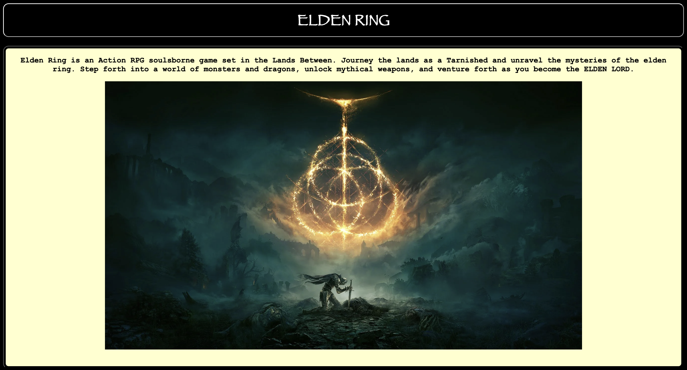

Elden Ring
This website was one of my first developments learning how to code with HTML and CSS. I thought it would be fine to make a website inspired by a famous game and choose to make it thematically match the central idea of elden ring.